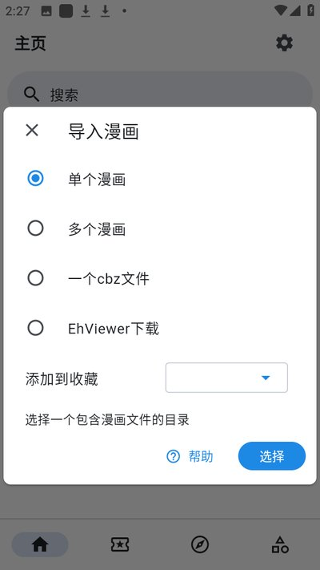
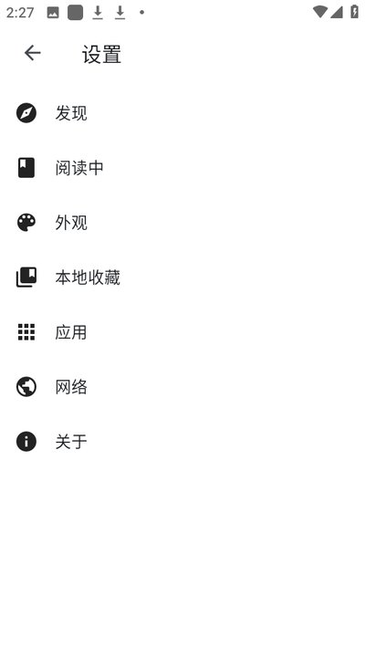

venera 踩过的四个坑：从导入到同步一次讲透
看着简单的漫画阅读器，实际用起来在目录导入、WebDAV 同步、搜索命中、订阅更新这几个地方藏着容易让人抓狂的细节。踩过之后整理出这份防坑清单。
第一次在venera官网装 venera 时以为就是个看漫画的阅读器，打开界面清爽、源脚本也多，感觉没什么难的。结果前后折腾了快一周才把书架整理利索——不是软件有 bug，是有几个设计上的细节太反直觉，新手很容易一头撞上去。写完这篇算给自己留个备忘，也给刚上手的朋友省点时间。
坑一：漫画导进来全是空的，原来目录摆错了
这个坑我踩得最早，也是最懵的一次。把收藏了大半年的漫画文件夹扔进导入目录，打开应用一看——书架上有条目，但点进去一张图都没有。
症状
导入后漫画封面和标题都显示正常，但进入阅读时所有章节空白，或者干脆连章节列表都不出来。我第一次遇到时以为要重装应用，甚至怀疑是不是文件权限问题，折腾了半小时没头绪。
原因
venera 对目录结构的要求比我用过的其他阅读器严格得多，它只认两种摆法：要么一本漫画一个文件夹、图片直接平铺；要么每章一个子目录、图片放进章节目录。关键是章节子目录里不能再嵌套——我习惯按「作品名 → 章节名 → 图片」三层摆，venera 扫到第二层就停了，下面的图片全被忽略。
另外文件名排序也有讲究。Windows 默认按字符串排，img1、img10、img2 的顺序会变成 img1、img10、img2，页序直接乱掉。没补零命名的漫画翻起来会跳页。

解法
把目录拍平成两层结构——漫画文件夹直接放图片，或者漫画文件夹下一层章节目录。文件名统一补零，三位数就 001、002、003，两位数至少 01、02。压缩包同理，包内结构和文件夹导入的规则完全一致，不用解压直接丢进去也行。
坑二：WebDAV 同步方向搞反，把云端覆盖了
多设备同步是我用 venera 的刚需——手机上看了一半，回家想在电脑上续。配置 WebDAV 的过程本身很简单，但第一次接入那一下的操作顺序差点让我丢了好几个月的收藏分组。
症状
新买的平板接入 WebDAV，我习惯性点了「上传」，结果云端的书架被平板上那套空壳数据顶掉了。等我反应过来的时候，以前整理的收藏分组和订阅记录全没了，只能从备份里恢复。
原因
同步方向不是看设备新旧，而是看哪一边的数据更完整。新设备第一次接入应该先「拉取」——把云端已有的完整书架同步过来，而不是反过来把自己的空数据推上去。我当时想当然地以为「上传 = 把新设备的数据传到云端」，完全没意识到这会覆盖掉云端的东西。
还有一个容易忽略的点：WebDAV 只同步应用数据这一层——收藏、订阅、阅读历史、设置偏好。漫画文件本身不在同步范围内，换设备看本地漫画还得手动拷过去或者重新下载。

解法
新设备第一次接入 WebDAV 永远先「拉取」，确认书架完整之后，以后的日常同步再按实际情况选上传还是拉取。如果两边都有新增数据，先在本地导出一份归档再操作，保险一点。想自动化的话桌面端从venera下载拿到安装包就行，还自带命令行通道，可以把同步脚本定时跑起来。
坑三：搜不到想看的漫画，不一定是源挂了
有段时间我搜某部漫画始终没结果，换了好几个源都不行，以为是源脚本全挂了，跑了排查清单也没找到问题。后来去venera文档翻了一下才弄明白，原来是关键词的翻译差异——我搜的是台译书名，源里用的是大陆译名。
症状
输入关键词后结果为空，换同义写法也搜不到，但用同一部作品的另一个译名或者角色名就能命中。有时候聚合搜索能出结果，但固定到某个源里单独搜就不行。
原因
venera 的搜索分聚合和单源两种模式，聚合搜索是所有启用的源一起查，覆盖面最大；单源搜索只能用该源声明的筛选项。很多人习惯性地直接在单源里搜，错过了其他源的命中。另外标签联想功能支持的源会弹出标准标签建议，比手打关键词准确率高，但很多人不知道有这个功能。
解法
搜不到的时候先跑聚合搜索，结果里按来源标识分流看哪个源命中质量最高。关键词多试几个同义写法和别名——翻译差异是搜不到的最常见原因。支持标签联想的源，点选建议标签比手打靠谱得多，尤其是按角色名和作品标签精确检索的时候。
坑四：收藏了就以为会提醒更新，结果追更断档
我有个坏习惯：看到连载中的漫画随手加个收藏就不管了，以为收藏了自然会有更新提醒。过了两个月想起来回去看，发现人家已经更了十几章，我完全没收到通知。
症状
收藏夹里的连载作品悄悄更新了，但应用没有任何推送或提醒。订阅更新页是空的，或者只有少数几部作品有状态变化。
原因
venera 里收藏和订阅是两个独立功能，分工完全不同：收藏是归档标记，解决「这部作品我标记了」；订阅才是盯更新，解决「它更新了我要第一时间知道」。只收藏不订阅的话，应用不会主动检查更新，得自己打开订阅更新页手动刷新才看得到。
解法
连载中的作品订阅和收藏双开——订阅负责盯更、收藏负责归组方便整理。完结作品只收藏就行。想省心的话，桌面端支持命令行批量检查订阅更新，配合系统定时任务能搭出「每日更新摘要」，不用每天手动打开刷新。
防坑清单
把上面的教训浓缩成五条速查，下次上手新设备或者新漫画时过一遍就够了：
- 目录摆成两层：图片平铺或章节一层子目录，文件名补零防排序乱
- WebDAV 新设备先拉取，云端数据比本地完整时别反向覆盖
- 搜不到先跑聚合搜索，关键词多试同义词，善用标签联想
- 连载作品订阅加收藏双开，只收藏不订阅等于没追更
- WebDAV 只同步应用数据，漫画文件迁移靠归档或手动拷贝
知道这些坑之后，这软件其实相当省心——源脚本加载快、阅读器体验流畅、多设备同步也稳。踩坑不可怕，可怕的是不知道坑在哪，希望这份清单能帮你少走点弯路。相关资料我在GitHub、Gitee、GitCode三个平台都同步了一份，国内访问哪个顺手就选哪个。